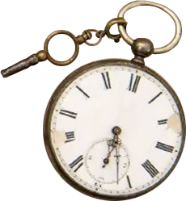

자, 뭐부터 시작할까요?
가장 먼저 아셔야 할 건 제 이름이 '에놀라'라는 거죠.
'에놀라(Enola)'의 철자를 거꾸로 조합하면
'홀로(Alone)'란 뜻이 되죠.
'에놀라(Enola)'의 철자를 거꾸로 조합하면
'홀로(Alone)'란 뜻이 되죠.
그래도 우리 둘은 늘 함께였죠.
엄마는 내 전부였어요. 하지만 엄마는 저와
모든걸 공유하지 않았죠.
엄마는 내 전부였어요. 하지만 엄마는 저와
모든걸 공유하지 않았죠.
넌 혼자서도 아주 잘할거야, 에놀라
그러면 이제 두 번째로 아셔야 할 걸 말씀드리죠.
일주일 전, 제가 열여섯 살이 되는 7월의 생일날 아침에 눈을 뜨자마자... 엄마가 사라졌다는 걸 알게 됐어요.
그러고서는 돌아오지 않았어요. 엄마는 작은 선물을 레인 아주머니께 맡기며 티타임 때 저에게 전해 달라고 했대요.
일주일 전, 제가 열여섯 살이 되는 7월의 생일날 아침에 눈을 뜨자마자... 엄마가 사라졌다는 걸 알게 됐어요.
그러고서는 돌아오지 않았어요. 엄마는 작은 선물을 레인 아주머니께 맡기며 티타임 때 저에게 전해 달라고 했대요.
세 번째로 아셔야 할 건요, 여러분 중에 이미 눈치채신 분도 계시겠지만
자전거 타기는 제 주특기가 아니란 거예요. 하지만 급히 갈 곳이 있을 때는
꼭 필요한 능력이죠.
자전거 타기는 제 주특기가 아니란 거예요. 하지만 급히 갈 곳이 있을 때는
꼭 필요한 능력이죠.
이 선물을 현명하게 쓰렴
네 번째로 아셔야 할 건, 제가 지금 두 오빠를 마중 가는 길이란 거죠.
마이크로프트 오빠와 셜록 오빠요. 맞아요. 셜록 홈즈는...
마이크로프트 오빠와 셜록 오빠요. 맞아요. 셜록 홈즈는...
그 유명한 탐정이자 학자이면서 화학자이고 바이올린 연주의
거장이며 사격의 명수이자 검객이면서 목검술의 달인이고
권투 선수이며 또한 연역적 추론의 귀재죠. 저의 천재
오빠랍니다. 오빠가 모든 의문을 다 풀어내겠죠.
거장이며 사격의 명수이자 검객이면서 목검술의 달인이고
권투 선수이며 또한 연역적 추론의 귀재죠. 저의 천재
오빠랍니다. 오빠가 모든 의문을 다 풀어내겠죠.
다섯 번째로 아셔야 할 건 오빠들은 아주 오랫동안
저를 만나지 않았단 거예요.
저를 만나지 않았단 거예요.
일이 아주 잘 풀리는 것 같은데 안 그런가요, 여러분?
Phase 1. 엄마 찾으러 갑니다. 발로 뛰는 게임이 시작됐어요.
